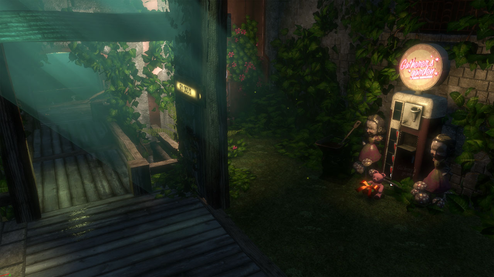
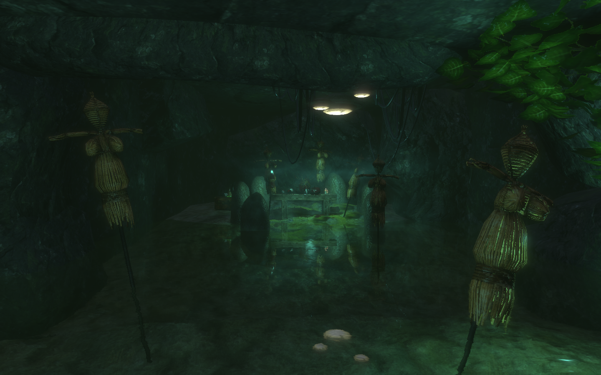
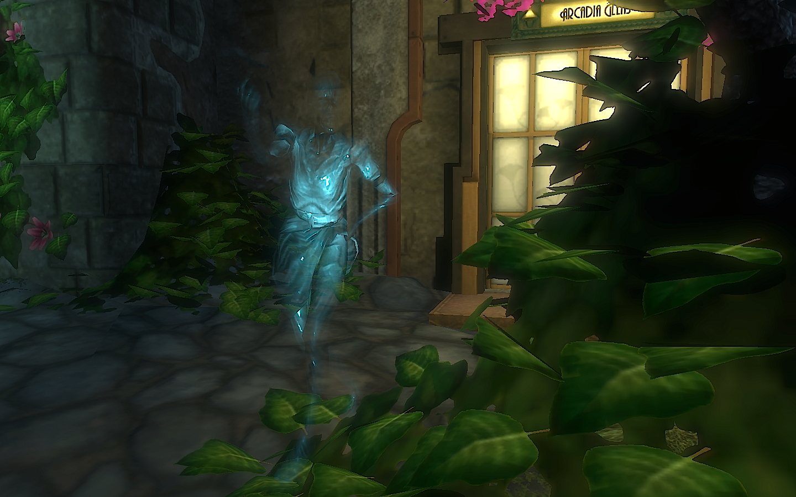
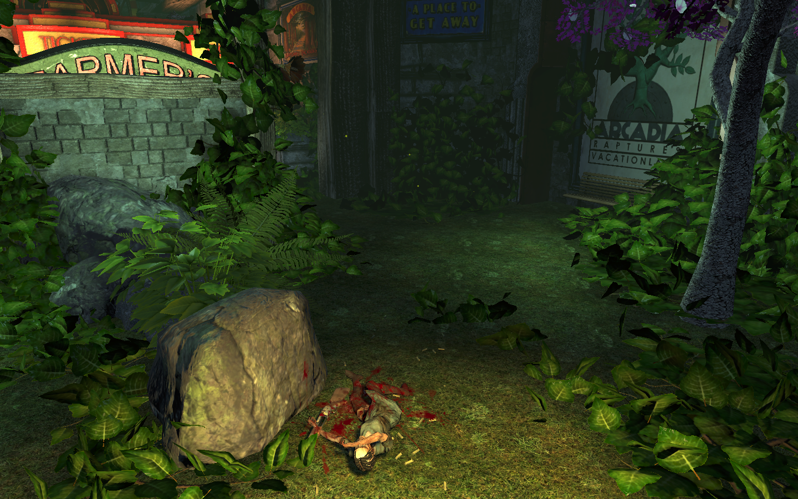
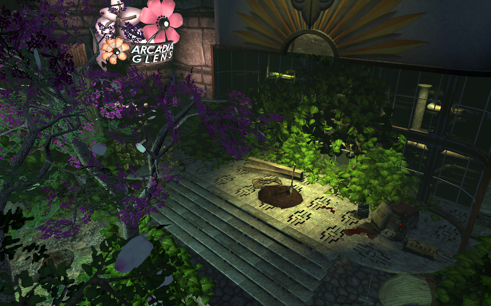
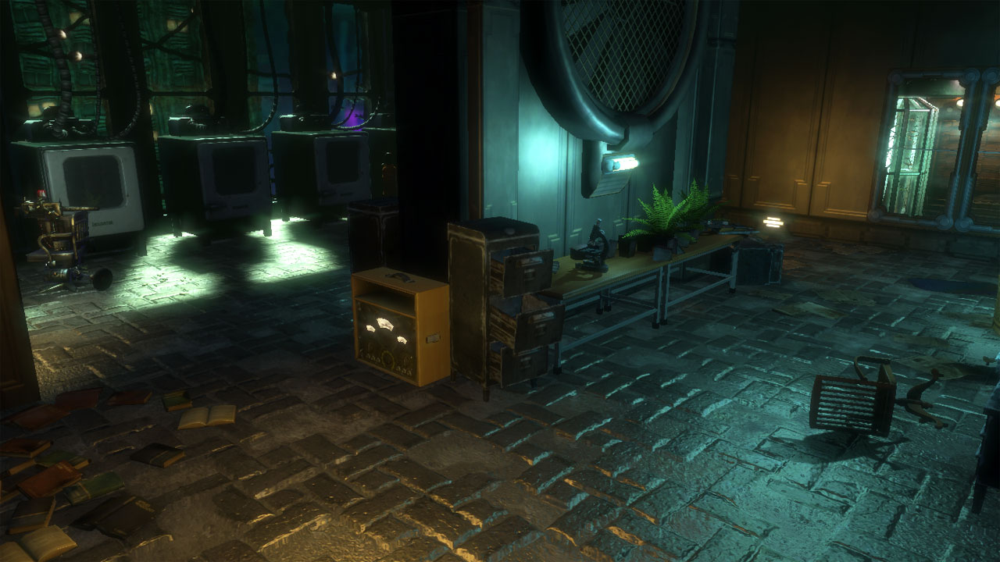
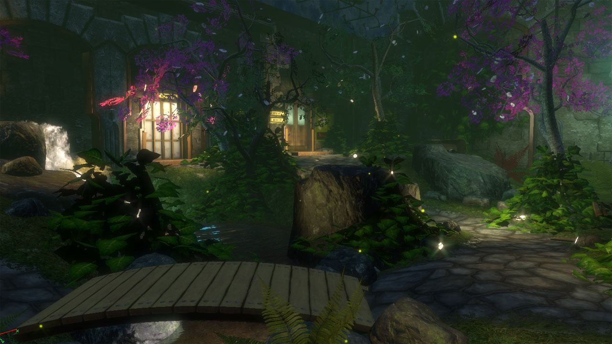
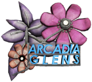

Arcadia is the living, breathing heart of Rapture. Its lush forests and abundant plant life served to generate life-sustaining oxygen the city needed. It was a tranquil haven for those seeking a respite from the daily rigors of city life to relax in solitude among the many trees and grassy hills. Vacationers seeking something more relaxing than the flashing lights of Fort Frolic could find peace and serenity in the lovely Waterfall Grotto, Tea Garden, and other havens beneath the canopy of trees.
Arcadia was created by botanical scientists on Ryan's payroll, most notably Julie Langford. Langford helped create Arcadia and its agricultural research facility, and later used ADAM to grow plants and trees. For a time, Arcadia was a free park for the citizens of Rapture, but Andrew Ryan closed Arcadia to all but paying customers, as he believed the service it provided warranted payment.
During the Civil War, a cult known as Saturnine appeared in Arcadia. The cult members worshiped nature and indulged in splicing and drinking ADAM as part of their "rituals." Ryan vowed to put a stop to the Saturnine, whom he saw as an organized religion, as their activities endangered citizens and disrupted the work of Arcadia's scientists. The park experienced a number of lock downs as the violence in the city became worse, and was eventually closed to the public altogether.
The Different Places to Visit




was one of the calmest places in Rapture. Nothing got the betties in the mood better than a night-time stroll in the Arcadia Tea Garden. Gently rolling hills, admirable
waterfalls, a calm stream, dim light, and a perfect atmosphere were all part of the Garden's allure. After the fall of Rapture, the Tea Garden's customers were kept away by the
growing civil strife.




The Tree Farm was a place where citizens could see trees and farm plants growing under the ocean. Situated next to the entrance gates to Arcadia, it was nigh impossible to
miss. By the end of the Civil War, the area was in disuse and became overgrown, making it nearly inaccessible with a growth of vines keeping the doors shut.

Arcadia Glens was the main hub of Arcadia. From the Glens, visitors could reach the Waterfall Grotto, the Rolling Hills, the Tea Garden and the Tree Farm. It consists of a long concourse running through Arcadia, connecting with lower paths where water was circulated through the various areas.